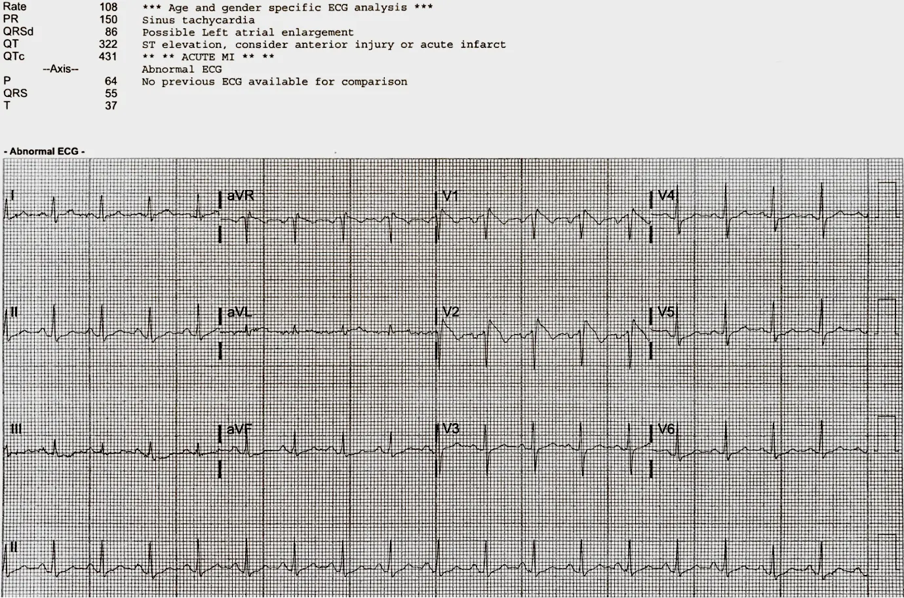
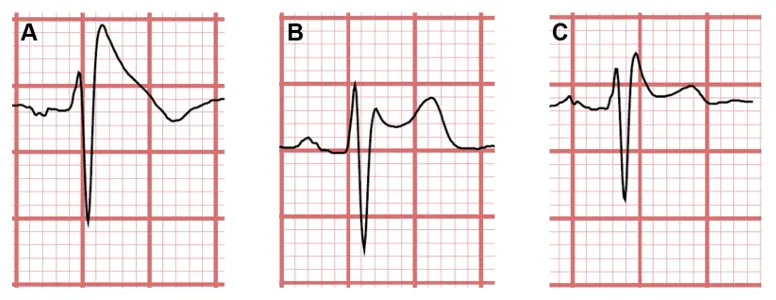

KATEGORIE 2: Genetische Ursachen
Neben einer genauen Familienanamnese ist das Wissen um die spezifischen EKG-Zeichen von enormer Bedeutung, um Hochrisiko-Synkopen zu erkennen!
Fall 3
In Baton Rouge, Louisiana wird eine Patientin vorstellig, nachdem sie synkopiert ist und sich mit der Brust angehauen hat. Neben den reproduzierbaren Brustschmerzen hat sie eine erhöhte Temperatur (39.0ºC), ein allgemeines Schwächegefühl, Erbrechen und Rückenschmerzen. Vitalparameter sind soweit unauffällig.
EKG

Die Untersuchung zeigte einen bestehenden Harnwegsinfekt. Anamnestisch konnte herausgefunden werden, dass in der Familiengeschichte mehrere Fälle von plötzlichem Herztod bekannt sind.
Brugada-Syndrom
Das Brugada-Syndrom ist eine hereditäre IonenkanalerkrankungDabei betroffen sind
Natriumkanäle (SCN5A); aus diesem Grund können antiarrhythmische Medikamente (vorallem Klasse-I-Antiarrhythmika) eine
maligne Tachyarrythmie induzieren! , die eine der häufigsten Ursachen, des plötzlichen Herztodes
darstellt!Brugada ist für bis zu 20% der plötzlichen Herztode in jungen Patienten
verantwortlich!
Diese Erkrankung muss in einer elektrophysiologischen Spezialabteilung abgeklärt werden, da oft die Implantation eines ICDs
notwendig ist.Die polymorphe VT im Einleitungsfall, war eine Manifestation des
Brugada-Syndroms
Die Einzige Möglichkeit Brugada präklinisch in Betracht zu ziehen, ist ein spezifisches Zeichen in den Ableitungen V1 und V2:

Auch diese Patientin bekam eine ICD implantiert.